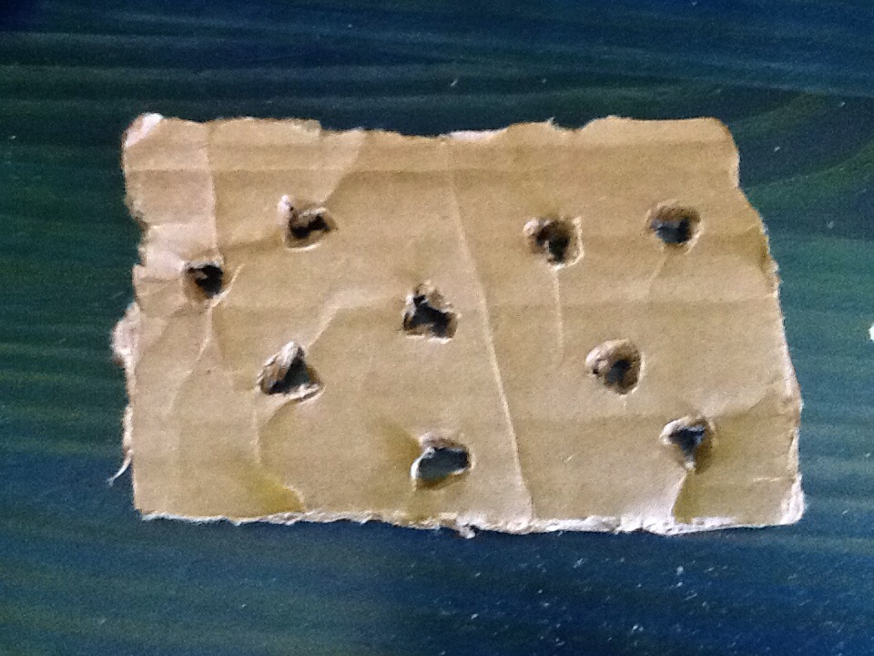
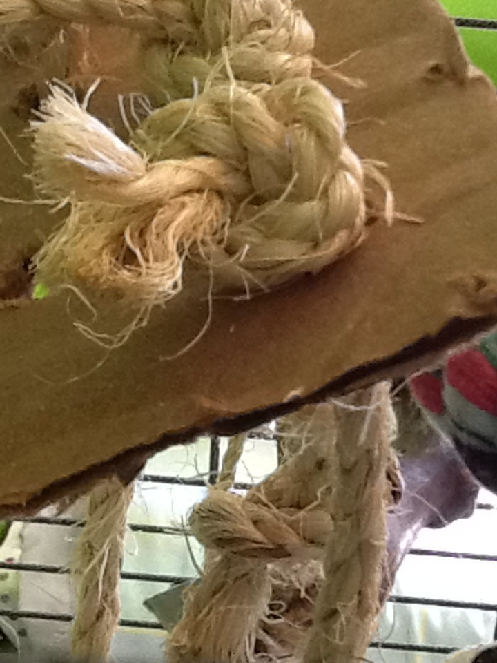
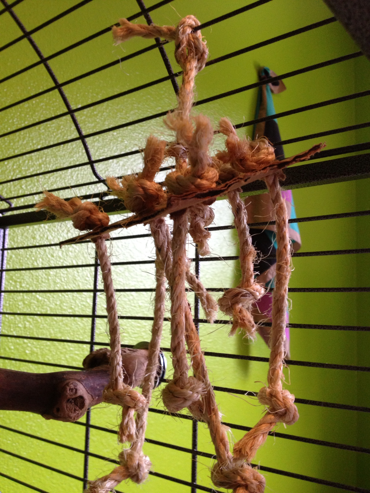

Wormholes
MATERIALS: cardboard, scissors, rope
1. Cut a rectangle of cardboard about 3" wide x 5" long. Make
the rectangle bigger or smaller depending on how big you want
the toy.
2. Use a pair of scissors to stab holes in the cardboard. Twist
the scissors to make the hole circular and clean-cut. Put holes
all over the cardboard, about an inch apart. Put one hole in
the center of the cardboard.

3. Count how many holes you made and cut that number of pieces of
rope, any length. Make the ropes pieces all different sizes. I
reccomend somewhere between 7" and 18".
4. Tie a knot at the top of each piece of rope. Then thread the
pieces through the holes, and tie a knot at the bottom of each
piece of rope so they are secured to the cardboard. Have all of the
pieces coming out one side of the cardboard with the top knots
on the other side, except the middle rope. The middle rope should
come out the opposite side. Use this rope to attach the toy to
the cage.

